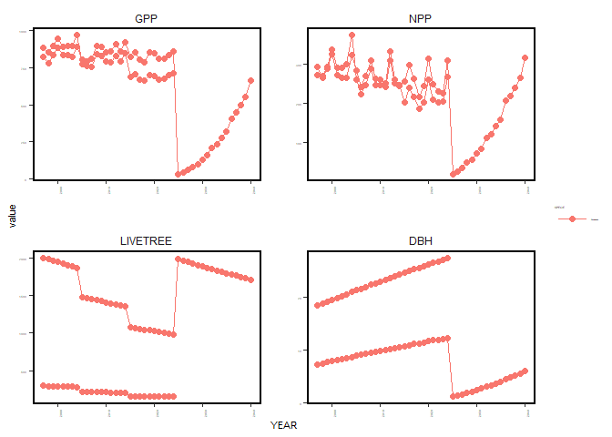
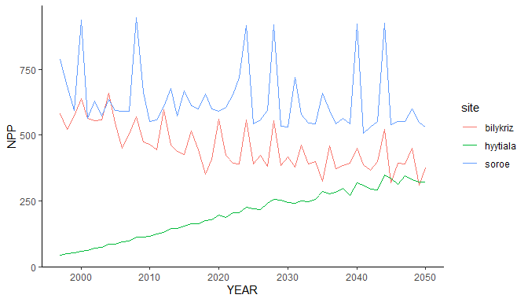
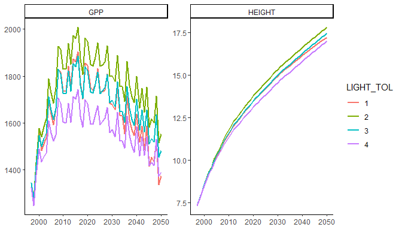

R3DFEM is an R interface to the version 5.7 of the 3D-CMCC-FEM,
a bio-geochemical, process-based forest model that simulates carbon,
water and nitrogen fluxes and stocks of homogeneous and heterogeneous
forests. This vignette shows the whole workflow: install the model,
prepare the inputs, run one or many simulations, read and plot the
outputs. The creation of the input files is described in detail in
vignette("input-files").
Installing the model
The package does not contain the model executable.
install_model() downloads the Windows build of the version
5.7 once, in a user directory; an executable already on disk can be
installed with
install_model("path/to/3D_CMCC_Forest_Model_5.7.exe") or
used directly with
options(R3DFEM.exe = "path/to/executable") (e.g. a binary
compiled on Linux from the source
code).
model_available()
#> [1] TRUEInputs
A simulation needs a directory with the stand, meteo, CO2, soil and topography files of the site and the parameterization of the species. The package contains complete input sets for three sites and the parameterizations of the version 5.7 for 19 species:
bk <- system.file("extdata", "bilykriz", "rcp0p0", package = "R3DFEM")
list.files(bk)
#> [1] "BilyKriz_co2.txt" "BilyKriz_meteo.txt" "BilyKriz_soil.txt"
#> [4] "BilyKriz_stand.txt" "BilyKriz_topo.txt" "Piceaabies.txt"
list_species()
#> [1] "Abiesalba" "Betulapubescens" "Castaneasativa"
#> [4] "Castaneasativa_coppice" "Fagussylvatica" "Fagussylvatica_coppice"
#> [7] "Larixdecidua" "Piceaabies" "Pinushalepensis"
#> [10] "Pinuslaricio" "Pinuspinaster" "Pinuspinea"
#> [13] "Pinussylvestris" "Quercuscerris" "Quercuscerris_coppice"
#> [16] "Quercusilex" "Quercusilex_coppice" "Quercuspubescens"
#> [19] "Quercusrobur"setup_inputs() prepares an input directory in one call,
from files, values or arguments of the make_*() helpers,
and copies the species files. Here we start a new site from the Bily
Kriz weather, with a stand of two cohorts of Norway spruce:
inputdir <- file.path(tempdir(), "spruce")
files <- setup_inputs("Spruce", inputdir,
stand = list(year = 1997, age = c(16, 30), species = "Piceaabies",
n_trees = c(2000, 300), avdbh = c(7.1, 18), height = c(5.6, 14)),
soil = list(lat = 49.3, lon = 18.32, clay = 20.6, silt = 20.6,
sand = 58.8, soil_depth = 80),
topo = 875,
meteo = file.path(bk, "BilyKriz_meteo.txt"),
co2 = file.path(bk, "BilyKriz_co2.txt"),
management = list(thinning = c(2005, 2015), thinning_int = c(20, 20),
harvesting = 2025))
basename(files)
#> [1] "Spruce_stand.txt" "Spruce_soil.txt" "Spruce_topo.txt"
#> [4] "Spruce_meteo.txt" "Spruce_co2.txt" "Spruce_management.txt"
#> [7] "Piceaabies.txt"check_inputs() performs the checks of
run_3DCMCCFEM() without running the model, for example the
harvest of 2025 requires the replanting arguments:
check_inputs("Spruce", "Piceaabies", year_start = 1997, year_end = 2040,
man = "var", pres_dens = "off", inputdir = inputdir)
#> Error in .check_run_inputs(site = site, species = species, year_start = year_start, :
#> 'man' = var and harvesting year ('Harvesting') is reached:
#> * Replanting arguments are missing, with no default.Running the model
run_3DCMCCFEM() writes the settings file in
inputdir, runs the model and returns the paths of the
outputs, named by type. The model cannot write files whose full path is
longer than 260 characters: use short output directories.
out <- "C:/r3dfem_vignette"
off <- run_3DCMCCFEM(site = "Spruce", species = "Piceaabies",
year_start = 1997, year_end = 2040, man = "off",
output = "annual", inputdir = inputdir,
outputdir = file.path(out, "off"))
var <- run_3DCMCCFEM(site = "Spruce", species = "Piceaabies",
year_start = 1997, year_end = 2040,
man = "var", pres_dens = "off",
rep_species = "Piceaabies", rep_trees = 2000, rep_age = 3,
rep_dbh = 1, rep_lai = 1, rep_height = 1.3,
output = "annual", inputdir = inputdir,
outputdir = file.path(out, "var"))
basename(var)
#> [1] "annual_Spruce_co2_on_man_var_pres_dens_off_reg_off_1997-2040.txt"
#> [2] "annual_man_Spruce_co2_on_man_var_pres_dens_off_reg_off_1997-2040.txt"read_output() reads an output as a data.frame (one row
per year, layer and class):
a <- read_output(var[["annual"]])
a[a$YEAR %in% c(2004:2006, 2024:2026), c("YEAR", "LAYER", "AGE", "LIVETREE", "DBH", "HEIGHT", "NPP")]
#> YEAR LAYER AGE LIVETREE DBH HEIGHT NPP
#> 15 2004 1 37 285 21.00430 20.71210 374.1735
#> 16 2004 0 23 1867 8.71908 8.64211 323.5464
#> 17 2005 1 38 226 21.35320 20.98060 260.7584
#> 18 2005 0 24 1480 8.93949 8.88881 283.8713
#> 19 2006 1 39 224 21.66810 21.21920 224.4143
#> 20 2006 0 25 1466 9.12064 9.09159 241.5253
#> 55 2024 1 57 156 27.51520 25.02790 266.6800
#> 56 2024 0 43 987 12.37940 12.68120 309.6152
#> 57 2025 0 4 1980 1.21380 1.62773 19.4864
#> 58 2026 0 5 1961 1.42490 1.73109 27.0734Plotting
plot_output_3DFEM() plots one or more variables
(optionally with a rolling mean) or a variable against another:
plot_output_3DFEM(var[["annual"]], y = c("GPP", "NPP", "LIVETREE", "DBH"), text_size = 14)
#> Warning in melt.data.table(df, id.vars = c(x.axis, id.var)): 'measure.vars'
#> [GPP, NPP, LIVETREE, DBH, ...] are not all of the same type. By order of
#> hierarchy, the molten data value column will be of type 'double'. All measure
#> variables not of type 'double' will be coerced too. Check DETAILS in
#> ?melt.data.table for more on coercion.
Many simulations
run_batch() runs a set of simulations, one per row of a
data.frame, each in its own directory with a copy of the inputs. The
columns are arguments of run_3DCMCCFEM() (or parameters of
the species file, see below); inputdir can change from run
to run. With parallel = TRUE the simulations are run with
the future plan set by the user:
sites <- system.file("extdata", c("bilykriz/rcp0p0", "hyytiala", "soro"), package = "R3DFEM")
runs <- data.frame(id = c("bilykriz", "hyytiala", "soroe"),
site = c("BilyKriz", "Hyytiala", "Soroe"),
species = c("Piceaabies", "Pinussylvestris", "Fagussylvatica"),
inputdir = sites)
future::plan("multisession", workers = 3)
res <- run_batch(runs, outputdir = file.path(out, "sites"), year_start = 1997,
year_end = 2050, man = "off", output = "annual", parallel = TRUE)
future::plan("sequential")
res[, c("id", "status")]
#> id status
#> 1 bilykriz ok
#> 2 hyytiala ok
#> 3 soroe okThe outputs of all the runs can be read together:
all <- read_output(res$output)
all$site <- basename(dirname(dirname(all$file)))
ggplot2::ggplot(all, ggplot2::aes(YEAR, NPP, colour = site)) +
ggplot2::geom_line() +
ggplot2::theme_classic()
Columns named as species parameters change the parameterization of
each run. param_sensitivity() uses this to show the effect
of a parameter:
s <- param_sensitivity("LIGHT_TOL", value = 1:4, variable = c("GPP", "HEIGHT"),
inputdir = bk, outputdir = file.path(out, "sens"),
site = "BilyKriz", species = "Piceaabies",
year_start = 1997, year_end = 2050, man = "off")
s$plot
Virtual stands
virtual_stand_generator() simulates the stand
development and writes stand files for age classes that are not
observed, to be used as starting points of new simulations:
vdir <- file.path(tempdir(), "bk")
dir.create(vdir)
invisible(file.copy(list.files(bk, full.names = TRUE), vdir))
vs <- virtual_stand_generator(site = "BilyKriz", species = "Piceaabies", stand_age = c(40, 60),
man = "off", inputdir = vdir, outputdir = file.path(out, "virtual"))
vs[, c("Age", "Species", "N", "AvDBH", "Height")]
#> Age Species N AvDBH Height
#> 1 40 Piceaabies 1884 12.9227 13.2593
#> 2 60 Piceaabies 1533 15.5468 15.9295References
R3DFEM: an R package for running the 3D-CMCC-FEM model. Earth Science Informatics (2025). https://link.springer.com/article/10.1007/s12145-025-01956-0
The model User Guide, with the full description of inputs and outputs, is available on the Forest Modelling Lab web page.